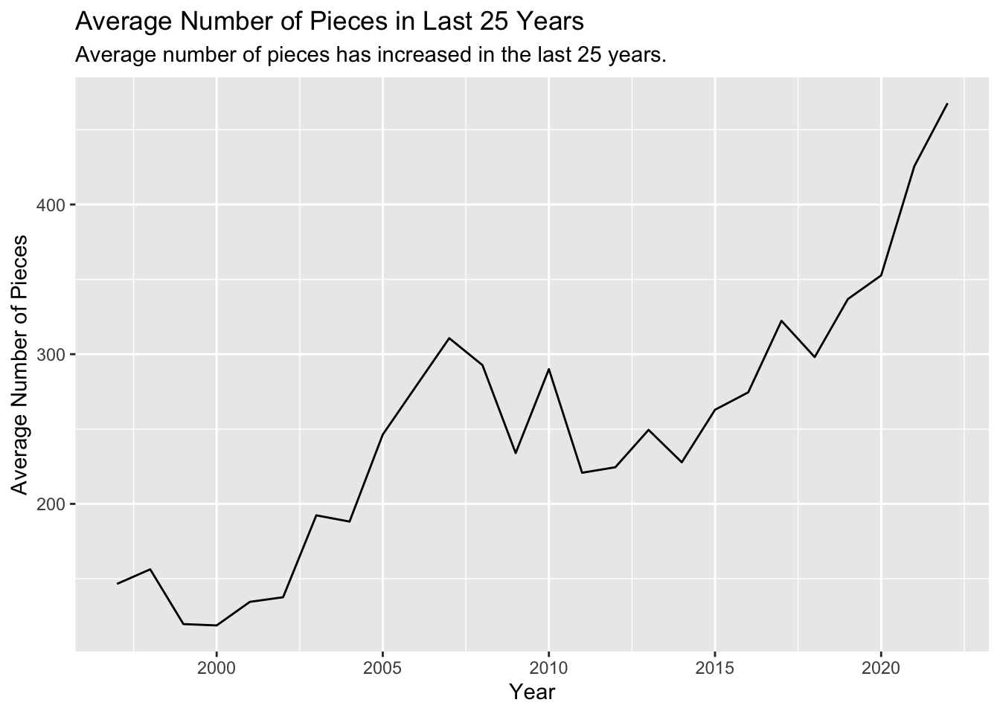
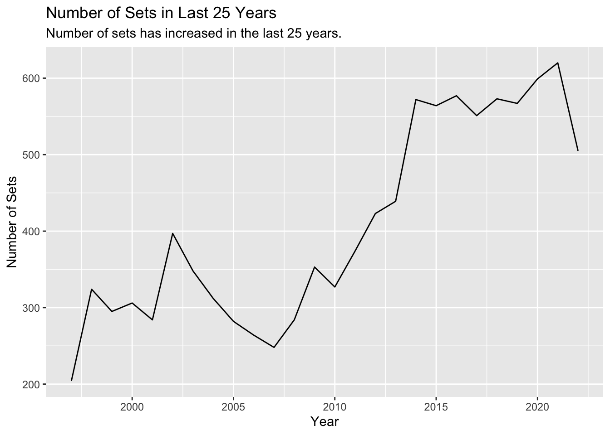
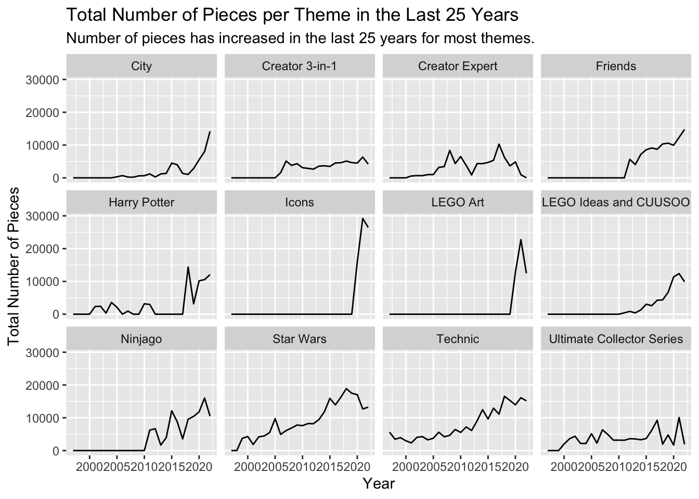
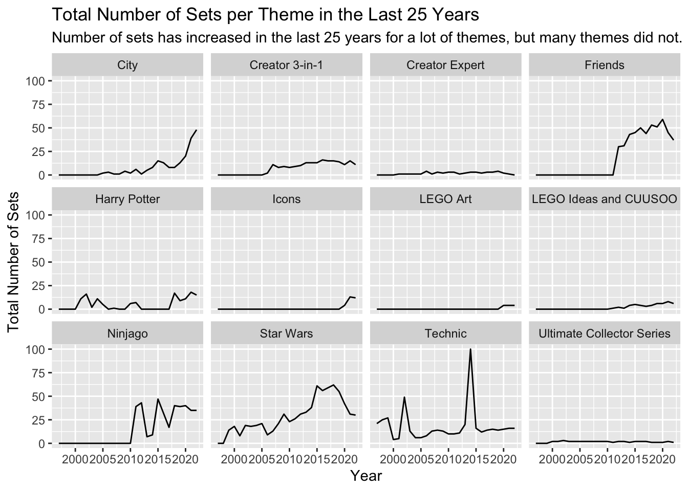
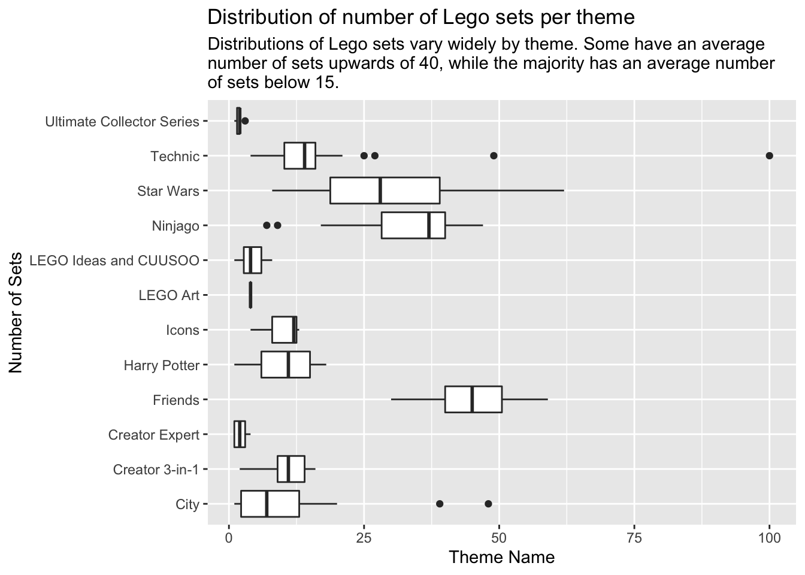
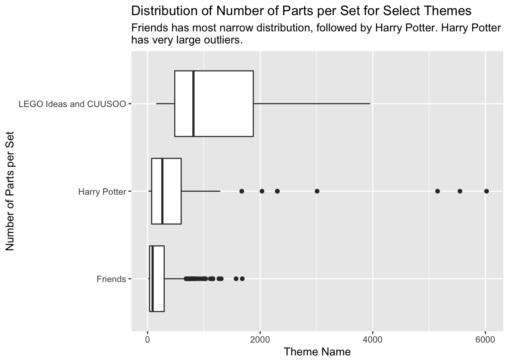

Lego sets all come with different themes. Each theme serves the purpose of being created to entertain a specific audience. The purpose of this analysis is to look at the difference in Lego set sizes, quantified by the number of Lego “bricks”, or pieces, according to the theme. This can give us a deeper insight into how Lego produces their sets, who their inteded audience is, and how many sets of that specific theme are produces. With this analysis, I aim to answer the question; Does a Lego theme affect a set’s size?
The intended audience for this data analysis are all Lego enthusiasts, and those interested in learning about the way that the Lego company thinks about the size of their sets depending on the theme. The original data came from the tidytuesday library, and it was published on September 6, 2022 (https://github.com/rfordatascience/tidytuesday/tree/master/data/2022/2022-09-06)(Mock 2022). Tidytuesday is a wonderful data source which allows users to practice their data science skils (Shrestha, Barik, and Parnin 2021). The data dictionary is included in the github repository linked above.
library(ggplot2)library(dplyr)
Attaching package: 'dplyr'
The following objects are masked from 'package:stats':
filter, lag
The following objects are masked from 'package:base':
intersect, setdiff, setequal, union
library(here)
here() starts at /Users/dlopez31/Desktop/biostat840-intro-alejandro-lopez
library(forcats)library(data.table)
Attaching package: 'data.table'
The following objects are masked from 'package:dplyr':
between, first, last
First, we are interested in joining the “sets” dataset containing all Lego sets created since 1965, with the “themes” dataset, containing the themes associated with the Lego sets.
Now our “with_theme” dataset contains the sets with the appropriate themes.
First, we are going to try to examine the relationship between the number of sets that is produced per theme and the number of pieces total that each theme has. This can give us an insight into whether specific theme production is focused on the number of sets or size of the set. We will obtain the top 12 and compare them. We will only focus on the last 25 years.
# A tibble: 12 × 3
ranking theme_name_pieces theme_name_sets
<int> <chr> <chr>
1 1 Star Wars Star Wars
2 2 Technic Friends
3 3 Ninjago Technic
4 4 Friends Ninjago
5 5 Ultimate Collector Series Bionicle
6 6 Creator Expert Gear
7 7 Icons Basic Set
8 8 Harry Potter Creator 3-in-1
9 9 Creator 3-in-1 City
10 10 LEGO Ideas and CUUSOO Creator
11 11 City Racers
12 12 LEGO Art Town
We see from the table above that Star Wars reigns supreme, with both the highest number of pieces and also the most number of sets produced. We can also see that there are some differences in the sets included in each list. A couple that I would like to point out that we will come back to later are the Harry Potter sets, only included in the list with the most number of pieces and the LEGO Ideas and CUUSOO set, also only included in the the list with the most number of pieces.
We will analyse how some of these numbers have changed over the years. On the graphs below, we see that the both the average number of pieces per set, as well as the total number of sets produced have increased in the last 25 years. The package ggplot2 was used for these visualizations (Wickham, Chang, and Wickham 2016).
with_theme %>%filter(year >=1997, num_parts >10) %>%group_by(year) %>%summarize(avg =mean(num_parts)) %>%ggplot(aes(year, avg)) +geom_line() +labs(x='Year', y='Average Number of Pieces', title='Average Number of Pieces in Last 25 Years', subtitle="Average number of pieces has increased in the last 25 years.")

with_theme %>%filter(year >=1997, num_parts >10) %>%group_by(year) %>%summarize(n =n()) %>%ggplot(aes(year, n)) +geom_line() +labs(x='Year', y='Number of Sets', title='Number of Sets in Last 25 Years', subtitle="Number of sets has increased in the last 25 years.")

Using the list of themes that have the most number of pieces, now we will analyze how the number of pieces has changed over the years for each theme. We will also look at how the number of total sets produced per theme has varied. We will focus on the last 25 years only.
`summarise()` has grouped output by 'theme_name'. You can override using the
`.groups` argument.
top_no_zero <- toptop
# A tibble: 183 × 4
theme_name year sum n
<chr> <dbl> <dbl> <int>
1 City 2005 314 2
2 City 2006 688 3
3 City 2007 234 1
4 City 2008 197 1
5 City 2009 599 4
6 City 2010 656 2
7 City 2011 1198 6
8 City 2012 248 1
9 City 2013 1188 5
10 City 2014 1360 8
# … with 173 more rows
for(x in most_popular_pieces){for(y in1997:2022){if(nrow(filter(top, theme_name==x, year==y)) ==0){ top <- top %>%add_row(theme_name=x, year=y, sum=0, n=0) } }}
top %>%ggplot(aes(year, sum)) +geom_line() +facet_wrap('theme_name') +labs(x='Year', y='Total Number of Pieces', title='Total Number of Pieces per Theme in the Last 25 Years', subtitle="Number of pieces has increased in the last 25 years for most themes.")

top %>%ggplot(aes(year, n)) +geom_line() +facet_wrap('theme_name') +labs(x='Year', y='Total Number of Sets', title='Total Number of Sets per Theme in the Last 25 Years', subtitle="Number of sets has increased in the last 25 years for a lot of themes, but many themes did not.")

On the graphs above, we see how the number of pieces per theme has changed in graph 1, as well as how the number of sets produced per theme has changed in graph 2, both over the last 25 years. In graph 1, We see in general that the total number of pieces per year has increased per theme. In graph 2, we see that some themes have largely increased the number of sets made, we see this for “Friends”, “City”, “Star Wars”, “Ninjago” and “Harry Potter”. On the other hand, “LEGO Ideas and CUUSOO” has increased, but the number of sets produced per year is still very low. This is in contrast to its number of pieces, which seems to have increased to upwards of 10000 by 2021.
In the plot below, we examine the distribution of the total number of sets produced per theme. We see that these themes all have varying distributions. The mean number of sets produced per theme ranges from 1 to upwards of 40. The “Friends” theme has the highest average number of sets made and it was also in the top for the most number of total pieces.
top_no_zero %>%ggplot(aes(theme_name, n)) +coord_flip() +geom_boxplot() +labs(x='Number of Sets', y='Theme Name', title='Distribution of number of Lego sets per theme', subtitle="Distributions of Lego sets vary widely by theme. Some have an average \nnumber of sets upwards of 40, while the majority has an average number \nof sets below 15.")

We will now focus on three specific themes, the “Friends” theme, which has a large number of sets produced, as well as pieces, along with “Harry Potter”, a very iconic theme, which was in the list for highest number of pieces, but not for highest number of sets produced, and on “LEGO Ideas and CUUSOO” which was also in the list for highest number of pieces, but lagged behind on the number of sets produced.
First, we look at the number of sets produced every year for those three themes. We see that “Friends” is the highest, even though it only started in 2012. “Harry Potter” did not make any sets from 2012-2017. This is probably because the last entry in the movie franchise premiered in 2011 and the Lego sets only got revitalized for the 20th anniversary of the first book coming out. “LEGO Ideas and CUUSOO” has been slowly increasing since it started in 2011.
sets_of_interest <-rbind(harry_potter, lego_ideas, friends)sets_of_interest %>%ggplot(aes(x=year, fill=theme_name)) +geom_bar() +labs(x='Year', y='Number of Sets', title='Number of Sets for Select Themes in the Last 25 Years', subtitle="Friends has the highest number of sets produced per year. Harry Potter was the first theme to \nstart in 2001, but had a dry spell in the late 2000's.") +guides(fill=guide_legend(title="Theme Name"))
In the graphs below, we see the distribution for the number of pieces for the three themes we had chosen. We see that “Friends” has the lowest distribution, followed by “Harry Potter”, which also has some outliers, and finally, “LEGO Ideas and CUUSOO”, with the highest distribution.
with_theme %>%filter(num_parts >10, theme_name %in%c('Friends', 'Harry Potter', 'LEGO Ideas and CUUSOO')) %>%ggplot(aes(x=theme_name, y=num_parts)) +coord_flip() +geom_boxplot() +labs(x='Number of Parts per Set', y='Theme Name', title='Distribution of Number of Parts per Set for Select Themes', subtitle="Friends has most narrow distribution, followed by Harry Potter. Harry Potter \nhas very large outliers.")

We can also see from the table below that the min for “LEGO Ideas and CUUSOO” is magnitudes higher than the other mins. The average for “LEGO Ideas and CUUSOO” is also higher than the others.
Note
The max is the highest for “Harry Potter”, with a whopping 6020 pieces per set and a retail price of $469.99.
From the analysis of this LEGO dataset, we can get a sense of how Lego chooses what sizes the sets for each theme get. The them “LEGO Ideas and CUUSOO” is a theme made up mostly of collectible sets, sets which are for decoration and not really used to play with. This theme is marketed as being for “experienced users” or adults. The sets with the most number of pieces for this theme are a replica of the Home Alone house, a replica of a grand piano, and a tree house. These are all collectible, with only a small number of minifigures or no minifigures at all.
The same can be said for “Harry Potter”, as their sets with the most number of pieces are collectibles. They are the Hogwarts castle, Diagon Alley, and the Hogwarts Express, all very iconic landmarks of the movies. These are not playable sets, and are meant to be displays or collectibles. The difference is that “Harry Potter” also contains sets with small numbers of pieces, which can be used for playing.
The “Friends” theme is marketed for kids, specifically young girls.These sets are meant to be played with, which explains why so many sets are made and why that theme has so many pieces. This themes is also meant to fill a vacuum, as before, there really weren’t any Lego themes that were specifically targeted for young girls. If a girl wanted to play with Legos, she would have to choose a set that would typically be associated with boys like those of “City” which usually have firefighters, cops, astronauts, etc. This idea worked out for the company, as the theme has only been out for roughly 11 years, but it is in the top number of sets made and also total number of pieces.
Things to keep in mind regarding the analysis
If there was data with the sales price for each set, we would be able to get a lot more information on how exactly it is that the Lego company chooses what sets are made and how big they are. There are many other factors that contribute to how many pieces each set has and how many sets are made per theme, such as minifigure inclusion, rarity of pieces, etc.
Shrestha, Nischal, Titus Barik, and Chris Parnin. 2021. “Remote, but Connected: How# TidyTuesday Provides an Online Community of Practice for Data Scientists.”Proceedings of the ACM on Human-Computer Interaction 5 (CSCW1): 1–31.
Wickham, Hadley, Winston Chang, and Maintainer Hadley Wickham. 2016. “Package ‘Ggplot2’.”Create Elegant Data Visualisations Using the Grammar of Graphics. Version 2 (1): 1–189.